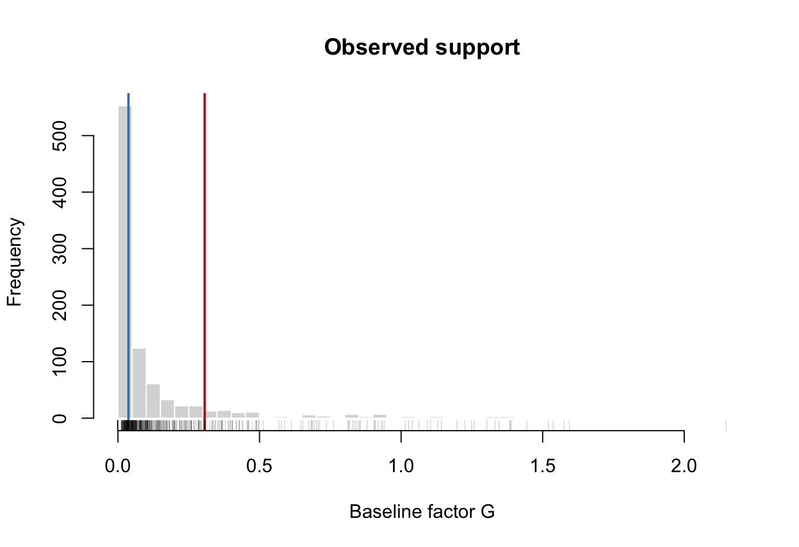

library(fdid)
data(fdid)
mortality$uniqueid <- paste(mortality$provid, mortality$countyid, sep = "-")
covar <- c("avggrain", "nograin", "urban", "dis_bj", "dis_pc",
"rice", "minority", "edu", "lnpop")
s_cont <- fdid_prepare(
data = transform(mortality, G_cont = lnpczupu),
Y_label = "mortality",
X_labels = covar,
G_label = "G_cont",
unit_label = "uniqueid",
time_label = "year"
)
tr_period <- 1958:1961
ref_period <- 19573 Continuous-G Overview
This chapter is the target map for continuous-G analysis. It does not try to fit every estimator. It explains which object you want, how to prepare the design, why support comes before estimation, and which chapter gives the full workflow.
3.1 Choose the Target First
Continuous-G methods do not estimate one interchangeable object. Decide whether the report needs a scalar, a curve, a derivative, a contrast, or a diagnostic display before choosing method.
| User target | Primary workflow | Reporting/display |
|---|---|---|
| Binary-G or discrete treated-vs-control FDID effect | method = "did", "ols1", "ols2", "ebal", "ipw", "aipw" |
summary(), raw/dynamic/overlap plots |
| Continuous-G scalar linear slope | method = "dml_plr" |
summary() with scalar DML inference label |
| Smooth continuous-G level curve | method = "kernel" first; method = "dml_flex" for adjusted flexible nuisance learning |
plot(type = "curve", curve = "level"), curve table |
| Continuous-G derivative curve | kernel or dml_flex with derivative output |
plot(type = "curve", curve = "derivative"), fdid_derivative() |
| Observed-population average derivative | method = "dml_incremental" |
summary() and density diagnostics |
| Fixed-reference level contrast | fitted kernel or dml_flex plus fdid_contrast() |
fdid_contrast(), plot(type = "contrast") |
| Support and overlap diagnostics | preparation and plotting diagnostics | support panels, rugs, density/histogram displays, overlap plots |
Keep four concepts separate:
- the estimand, such as a scalar slope or
theta(g1) - theta(g0); - the estimator, such as
kernel,dml_flex, ordml_incremental; - the inference calculation, such as analytical, bootstrap, or multiplier;
- the plot or reporting view, such as a curve plot or contrast table.
The same fitted object can therefore support several reporting layers. A useful default order is summary() first, then plot(), then targeted helpers.
| Reporting layer | What it summarizes | Inference source to check |
|---|---|---|
summary() scalar rows |
One aggregate event/dynamic number. For kernel and dml_flex, the continuous-G event row is an interval-average level slope over the fitted grid. |
Printed SE/CI method when stored; curve covariance is used when available. |
plot(type = "curve") |
Stored level and/or derivative curves at eval_g. |
The legend labels whether intervals are pointwise, bootstrap envelope, practical mapping band, or BLP covariance band. |
fdid_contrast() |
Fixed level differences such as mu(g1) - mu(g0) or theta(g1) - theta(g0). |
inference = "auto" tries stored covariance, then replicate curves, then bands, then a labeled pointwise approximation. |
fdid_derivative() |
A derivative value at one G, or a derivative contrast if requested through fdid_contrast(type = "derivative"). |
Uses derivative covariance/replicates when available; otherwise falls back in the same order. |
3.2 Prepare the Continuous-G Design
Use a continuous baseline factor in fdid_prepare(). The example below uses lnpczupu, a log social-capital measure from the mortality data.
For curve methods, eval_g is an estimation grid. The package estimates and stores curve quantities at those values; plotting displays the stored grid rather than densifying the curve after the fact.
g_positive <- s_cont$G[s_cont$G > 0]
eval_g <- as.numeric(stats::quantile(
g_positive,
probs = seq(0.20, 0.80, length.out = 9),
na.rm = TRUE
))
support_summary <- data.frame(
quantity = c("units", "share at zero", "grid minimum", "grid median",
"grid maximum", "grid length"),
value = c(nrow(s_cont), mean(s_cont$G == 0), min(eval_g),
stats::median(eval_g), max(eval_g), length(eval_g))
)
knitr::kable(support_summary, digits = 4)| quantity | value |
|---|---|
| units | 921.0000 |
| share at zero | 0.4473 |
| grid minimum | 0.0372 |
| grid median | 0.0951 |
| grid maximum | 0.3063 |
| grid length | 9.0000 |
3.3 Inspect Support Before Estimation
Continuous-G curve estimates are weakest where observed support is sparse. Inspect the empirical distribution of G before fitting a curve and avoid turning a tail extrapolation into a headline result.
hist(s_cont$G, breaks = 35, col = "gray85", border = "white",
xlab = "Baseline factor G", main = "Observed support")
abline(v = range(eval_g), col = c("steelblue", "firebrick"), lwd = 2)
rug(s_cont$G, col = grDevices::adjustcolor("black", 0.25))
3.4 Method Choice In One Table
| Need | Use first | Then check | Avoid saying |
|---|---|---|---|
| Quick scalar benchmark | dml_plr |
OLS/discrete sensitivity | “This is the whole dose-response curve” |
| Smooth level curve | kernel |
bandwidth and support | “Kernel removes all confounding concerns” |
| Flexible adjusted level curve | dml_flex |
learners, density, signal map | “The scalar summary is the main result” |
| Observed average derivative | dml_incremental |
density diagnostics and fold sensitivity | “It is just the average plotted slope” |
| Fixed-reference comparison | fdid_contrast() after kernel or dml_flex |
exact grid vs interpolation and available covariance/replicates | “All contrast intervals use the same variance source” |
| Plot support | curve plot support options | mass points and sparse regions | “The support display is adjusted causal evidence” |
3.5 What Not To Compare Directly
Do not line up dml_plr, kernel, dml_flex, and dml_incremental as if they estimate the same number. dml_plr is a scalar partially linear slope. kernel and dml_flex can report level and derivative curves. dml_incremental is an observed-population average derivative, not the average of a plotted dml_flex derivative curve. A fixed-reference contrast is a function of a stored level curve, not a new estimator.